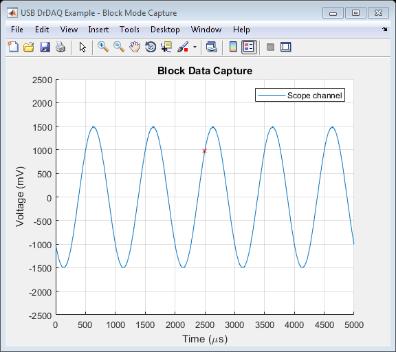

USB DrDAQ Block Data Capture Example
This is a MATLAB script that demonstrates how to use the usbdrdaq shared library API functions to capture a block of data from a USB DrDAQ data logger using the following approach:
- Loading the shared library
- Open a unit
- Display unit information
- Set up an input channel
- Specify the sampling interval
- Setup a trigger
- Output a signal from the signal generator
- Collect a block of data
- Retrieve the data values and convert to millivolts
- Plot data
- Close the unit
- Unload the shared library
To run the script, type the name of the file, USBDrDAQ_example, at the MATLAB command prompt.
The file, USBDrDAQExample.m must be on your MATLAB PATH. For additional information on setting your MATLAB PATH, type 'help addpath' at the MATLAB command prompt.
Description: Demonstrates how to call simple functions in order to use setup a USB DrDAQ data logger and capture some data.
Copyright: © 2014-2017 Pico Technology Ltd. See LICENSE file for terms.
Contents
- Clear command line and workspace and close any figures
- Load configuration information
- Define any parameters required later on
- Load the shared library
- Open the device
- Display unit information
- Set the sampling interval
- Find scaling information
- Set channel scaling
- Set trigger
- Prompt to connect Sig Gen output to Scope channel
- Start signal generator
- Start data collection
- Retrieve data values
- Process data
- Reset the ready flag if another block capture is required
- Stop the signal generator
- Stop the device
- Close unit
- Unload shared library
Clear command line and workspace and close any figures
clc; clear; close all; fprintf('USB DrDAQ Block Capture Example\n\n');
USB DrDAQ Block Capture Example
Load configuration information
USBDrDAQConfig;
Define any parameters required later on
USBDRDAQ_SCOPE_INPUTS_MV = [1250, 2500, 5000, 10000]; % Scope channel input ranges
Load the shared library
archStr = computer('arch'); usbDrDaqMFile = str2func(strcat('usbdrdaqMFile_', archStr)); if ~libisloaded('usbdrdaq') if ispc() loadlibrary('usbdrdaq.dll', usbDrDaqMFile); elseif ismac() error('USBDrDAQBlockExample:OSNotSupported', ... 'macOS not supported, please contact Pico Technology Technical Support for further assistance.'); elseif isunix() loadlibrary('libusbdrdaq.so', usbDrDaqMFile, 'alias', 'usbdrdaq'); end if ~libisloaded('usbdrdaq') error('USBDrDaqBlockExample:LibraryNotLoaded', 'Library usbdrdaq or prototype file not found'); end end
Open the device
pHandle = libpointer('int16Ptr', 0); [status.openUnit] = calllib('usbdrdaq','UsbDrDaqOpenUnit', pHandle); handle = pHandle.Value; if (status.openUnit ~= PicoStatus.PICO_OK) unloadlibrary('usbdrdaq'); error('USBDrDaqBlockExample:UnitNotOpened, Cannot open unit - status code: %d.', status.openUnit); end
Display unit information
infoStr = blanks(100);
requiredSize = length(infoStr);
unitInfoDesc = {'Driver version: '; 'USB version: '; 'Hardware version: '; 'Variant: '; ...
'Batch & Serial: '; 'Cal. Date: '; 'Kernel version: '};
fprintf('Unit information:-\n\n');
status.getUnitInfo = zeros(7, 1, 'uint32');
for i = 1:length(unitInfoDesc)
[status.getUnitInfo(i, 1), infoStr1, requiredsize] = calllib('usbdrdaq','UsbDrDaqGetUnitInfo',...
handle, infoStr, length(infoStr), requiredSize, (i - 1));
fprintf('%s\n', char(strcat(unitInfoDesc(i), infoStr1)));
end
fprintf('\n');
Unit information:- Driver version: 1.2.0.4 USB version: USB 1.1 Hardware version: 1 Variant: USB DrDAQ Batch & Serial: AY776/212 Cal. Date: 28Feb13 Kernel version: PICOPP.SYS V1.0
Set the sampling interval
pMicrosecondsForBlock = libpointer('singlePtr', 1000.0); totalSamples = 5000; channels = [usbDrDaqEnuminfo.enUsbDrDaqInputs.USB_DRDAQ_CHANNEL_SCOPE]; numberOfChannels = length(channels); numberOfSamplesPerChannel = totalSamples / numberOfChannels; [status.setIntervalF] = calllib('usbdrdaq', 'UsbDrDaqSetIntervalF', handle, pMicrosecondsForBlock, numberOfSamplesPerChannel, ... channels, numberOfChannels); microsecondsForBlock = pMicrosecondsForBlock.Value; if (status.setIntervalF ~= PicoStatus.PICO_OK) calllib('usbdrdaq','UsbDrDaqCloseUnit', handle); unloadlibrary('usbdrdaq'); error('USBDrDaqBlockExample:UsbDrDaqSetIntervalF, UsbDrDaqSetIntervalF returned status code: %d\n', status.setIntervalF); end
Find scaling information
Find the scaling information for the selected channel(s). In this case, the scalings are required for the scope input channel.
channel = usbDrDaqEnuminfo.enUsbDrDaqInputs.USB_DRDAQ_CHANNEL_SCOPE; pNumScales = libpointer('int16Ptr', 0); pCurrentScale = libpointer('int16Ptr', 0); names = blanks(256); [status.getScalings, ~, ~, scalingNames] = calllib('usbdrdaq', 'UsbDrDaqGetScalings', handle, channel, pNumScales, pCurrentScale, names, length(names)); numScales = pNumScales.Value; currentScale = pCurrentScale.Value; fprintf('Information for Scope channel:-\n\n'); fprintf('Number of scales: %d\n', numScales); fprintf('Current scale: %d\n', currentScale); fprintf('Names: \n\n%s\n', scalingNames); if (status.getScalings ~= PicoStatus.PICO_OK) calllib('usbdrdaq','UsbDrDaqCloseUnit', handle); unloadlibrary('usbdrdaq'); error('USBDrDaqBlockExample:UsbDrDaqGetScalings, UsbDrDaqGetScalings returned status code: %d\n', status.getScalings); end
Information for Scope channel:- Number of scales: 4 Current scale: 0 Names: +/-10 V:V+/-5 V:V+/-2.5 V:V+/-1.25 V:V
Set channel scaling
scalingNumber = usbDrDaqEnuminfo.enUsbDrDaqScopeRange.USB_DRDAQ_2V5; status.setScalings = calllib('usbdrdaq', 'UsbDrDaqSetScalings', handle, channel, scalingNumber); if (status.setScalings ~= PicoStatus.PICO_OK) calllib('usbdrdaq','UsbDrDaqCloseUnit', handle); unloadlibrary('usbdrdaq'); error('USBDrDaqBlockExample:UsbDrDaqSetIntervalF, UsbDrDaqSetScalings returned status code: %d\n', status.setScalings); end
Set trigger
enabled = PicoConstants.TRUE; autoTrigger = 0; % Re-arm the trigger autoMs = 2000; % Wait 2 seconds for trigger event, otherwise trigger automatically direction = 0; % Falling edge threshold = 1000; % millivolts (refer to channel scaling) hysteresis = 50; % In ADC counts delay = -50.0; % Place trigger event in middle of block status.setTrigger = calllib('usbdrdaq', 'UsbDrDaqSetTrigger', handle, enabled, autoTrigger, autoMs, ... channel, direction, threshold, hysteresis, delay); if (status.setTrigger ~= PicoStatus.PICO_OK) calllib('usbdrdaq','UsbDrDaqCloseUnit', handle); unloadlibrary('usbdrdaq'); error('USBDrDaqBlockExample:UsbDrDaqSetTrigger, UsbDrDaqSetTrigger returned status code: %d\n', status.setTrigger); end
Prompt to connect Sig Gen output to Scope channel
h = helpdlg('Connect Sig Gen to Scope channel and click OK.', 'Connect Input Signal'); uiwait(h);
Start signal generator
offsetVoltage = 0; % volts peakToPeak = 3000000; % ±1.5 V frequency = 1000; % 1 kHz waveType = usbDrDaqEnuminfo.enUsbDrDaqWave.USB_DRDAQ_SINE; status.setSigGenBuiltIn = calllib('usbdrdaq','UsbDrDaqSetSigGenBuiltIn', handle, offsetVoltage, peakToPeak, frequency, waveType); if (status.setSigGenBuiltIn ~= PicoStatus.PICO_OK) calllib('usbdrdaq','UsbDrDaqCloseUnit', handle); unloadlibrary('usbdrdaq'); error('USBDrDaqBlockExample:UsbDrDaqSetSigGenBuiltIn, UsbDrDaqSetSigGenBuiltIn returned status code: %d\n', status.setSigGenBuiltIn); end
Start data collection
Collect a single block of data
disp('Starting data collection...'); method = usbDrDaqEnuminfo.e_BLOCK_METHOD.BM_SINGLE; status.run = calllib('usbdrdaq', 'UsbDrDaqRun', handle, numberOfSamplesPerChannel, method); if (status.run ~= PicoStatus.PICO_OK) calllib('usbdrdaq','UsbDrDaqCloseUnit', handle); unloadlibrary('usbdrdaq'); error('USBDrDaqBlockExample:UsbDrDaqRun, UsbDrDaqRun returned status code: %d\n', status.run); end ready = 0; while (ready == 0) [status.isReady, ready] = calllib('usbdrdaq', 'UsbDrDaqReady', handle, ready); pause(0.01); end if (ready == PicoConstants.TRUE) disp('Data collection complete.'); end
Starting data collection... Data collection complete.
Retrieve data values
pValues = libpointer('singlePtr', zeros(totalSamples, 1, 'single')); pSamplesPerChannel = libpointer('uint32Ptr', numberOfSamplesPerChannel); pOverflow = libpointer('uint16Ptr', 0); pTriggerIndex = libpointer('uint32Ptr', 0); [status.getValuesF, ~, ~, ~] = calllib('usbdrdaq', 'UsbDrDaqGetValuesF', handle, pValues, pSamplesPerChannel, pOverflow, pTriggerIndex); if (status.getValuesF ~= PicoStatus.PICO_OK) calllib('usbdrdaq','UsbDrDaqCloseUnit', handle); unloadlibrary('usbdrdaq'); error('USBDrDaqBlockExample:UsbDrDaqGetValuesF, UsbDrDaqGetValuesF returned status code: %d\n', status.getValuesF); end values = pValues.Value; numSamplesCollectedPerChannel = pSamplesPerChannel.Value; overflow = pOverflow.Value; triggerIndex = pTriggerIndex.Value;
Process data
Process the data as required. In this example, we plot the scope channel data.
disp('Plotting data...'); % Calculate time axis values - note that data collection is sequential % across all channels samplingInterval = (totalSamples / microsecondsForBlock); timeUs = double(samplingInterval * double(0:(numSamplesCollectedPerChannel * numberOfChannels) - 1)); figure1 = figure('Name','USB DrDAQ Example - Block Mode Capture', ... 'NumberTitle', 'off'); % Plot scope channel % If plotting data from multiple channels, extract the time and data values % for that specific channel, ensuring that the first index corresponds to % the channel for which you wish to plot the data. sortedChannels = sort(channels); % Sort in ascending order % Find index of the scope channel in the sortedChannels array - there % should only be one entry in the array for the channel scopeChannelIndex = find(sortedChannels == usbDrDaqEnuminfo.enUsbDrDaqInputs.USB_DRDAQ_CHANNEL_SCOPE); if (length(scopeChannelIndex) >= 1) scopeChannelIndex = scopeChannelIndex(1); end hold on; plot(timeUs(1:numberOfChannels:end), values(1:numberOfChannels:end)); % Plot the trigger point plot(timeUs(triggerIndex + 1), values(triggerIndex + 1), 'xr'); ylim([(-1 * USBDRDAQ_SCOPE_INPUTS_MV(scalingNumber + 1)) USBDRDAQ_SCOPE_INPUTS_MV(scalingNumber + 1)]); title('Block Data Capture', 'FontWeight', 'bold'); xlabel('Time (\mus)'); ylabel('Voltage (mV)'); legend('Scope channel') grid on; hold off;
Plotting data...
Reset the ready flag if another block capture is required
ready = 0;
Stop the signal generator
[status.stopSigGen] = calllib('usbdrdaq', 'UsbDrDaqStopSigGen', handle); if (status.stopSigGen ~= PicoStatus.PICO_OK) calllib('usbdrdaq','UsbDrDaqCloseUnit', handle); unloadlibrary('usbdrdaq'); error('USBDrDaqBlockExample:UsbDrDaqStopSigGen, UsbDrDaqStopSigGen returned status code: %d\n', status.getValuesF); end
Stop the device
[status.stop] = calllib('usbdrdaq','UsbDrDaqStop', handle);
Close unit
[status.closeUnit] = calllib('usbdrdaq','UsbDrDaqCloseUnit', handle);
Unload shared library
unloadlibrary('usbdrdaq'); if (~libisloaded('usbdrdaq')) disp('usbdrdaq library unloaded successfully.'); else error('USBDrDAQBlockExample:LibraryUnloadError', 'Library not unloaded.'); end
usbdrdaq library unloaded successfully.